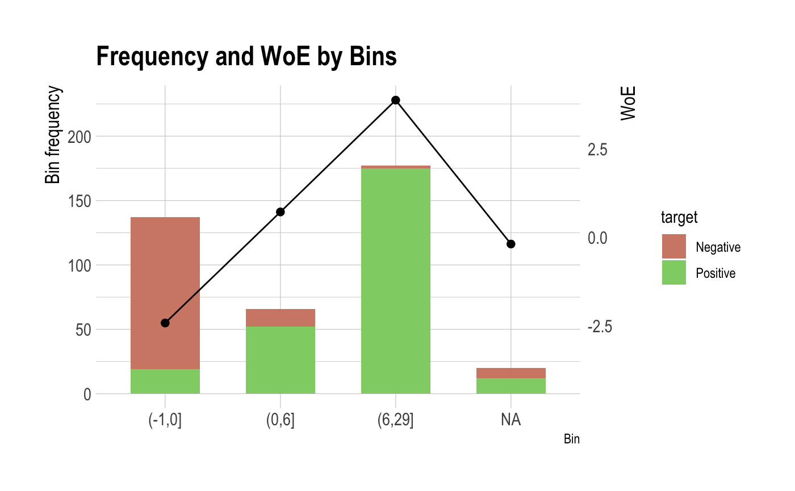

summary method for "performance_bin". summary metrics to evaluate the performance of binomial classification model.
# S3 method for performance_bin summary(object, ...)
| object | an object of class "performance_bin", usually, a result of a call to performance_bin(). |
|---|---|
| ... | further arguments to be passed from or to other methods. |
NULL.
print() to print only binning table information of "performance_bin" objects. summary.performance_bin() includes general metrics and result of significance tests life follows.:
Binning Table : Metrics by bins.
CntRec, CntPos, CntNeg, RatePos, RateNeg, Odds, WoE, IV, JSD, AUC.
General Metrics.
Gini index.
Jeffrey's Information Value.
Jensen-Shannon Divergence.
Kolmogorov-Smirnov Statistics.
Herfindahl-Hirschman Index.
normalized Herfindahl-Hirschman Index.
Cramer's V Statistics.
Table of Significance Tests.
# \donttest{ # Generate data for the example heartfailure2 <- heartfailure set.seed(123) heartfailure2[sample(seq(NROW(heartfailure2)), 5), "creatinine"] <- NA # Change the target variable to 0(negative) and 1(positive). heartfailure2$death_event_2 <- ifelse(heartfailure2$death_event %in% "Yes", 1, 0) # Binnig from creatinine to platelets_bin. breaks <- c(0, 1, 2, 10) heartfailure2$creatinine_bin <- cut(heartfailure2$creatinine, breaks) # Diagnose performance binned variable perf <- performance_bin(heartfailure2$death_event_2, heartfailure2$creatinine_bin) perf#> Bin CntRec CntPos CntNeg CntCumPos CntCumNeg RatePos RateNeg RateCumPos #> 1 (0,1] 128 24 104 24 104 0.25000 0.51232 0.25000 #> 2 (1,2] 132 51 81 75 185 0.53125 0.39901 0.78125 #> 3 (2,10] 34 21 13 96 198 0.21875 0.06404 1.00000 #> 4 <NA> 5 0 5 96 203 0.00000 0.02463 1.00000 #> 5 Total 299 96 203 NA NA 1.00000 1.00000 NA #> RateCumNeg Odds LnOdds WoE IV JSD AUC #> 1 0.51232 0.23077 -1.46634 -0.71748 0.18821 0.02303 0.06404 #> 2 0.91133 0.62963 -0.46262 0.28623 0.03785 0.00472 0.20574 #> 3 0.97537 1.61538 0.47957 1.22843 0.19005 0.02237 0.05704 #> 4 1.00000 0.00000 -Inf NA NA NA 0.02463 #> 5 NA 0.47291 -0.74886 NA NA NA 0.35145summary(perf)#> ── Binning Table ──────────────────────── Several Metrics ── #> Bin CntRec CntPos CntNeg RatePos RateNeg Odds WoE IV JSD #> 1 (0,1] 128 24 104 0.25000 0.51232 0.23077 -0.71748 0.18821 0.02303 #> 2 (1,2] 132 51 81 0.53125 0.39901 0.62963 0.28623 0.03785 0.00472 #> 3 (2,10] 34 21 13 0.21875 0.06404 1.61538 1.22843 0.19005 0.02237 #> 4 <NA> 5 0 5 0.00000 0.02463 0.00000 NA NA NA #> 5 Total 299 96 203 1.00000 1.00000 0.47291 NA NA NA #> AUC #> 1 0.06404 #> 2 0.20574 #> 3 0.05704 #> 4 0.02463 #> 5 0.35145 #> #> ── General Metrics ───────────────────────────────────────── #> • Gini index : -0.29711 #> • IV (Jeffrey) : NA #> • JS (Jensen-Shannon) Divergence : NA #> • Kolmogorov-Smirnov Statistics : 0.26232 #> • HHI (Herfindahl-Hirschman Index) : 0.39137 #> • HHI (normalized) : 0.1885 #> • Cramer's V : 0.30024 #> #> ── Significance Tests ──────────────────── Chisquare Test ── #> Bin A Bin B statistics p_value #> 1 (0,1] (1,2] 12.520885 0.0004024283 #> 2 (1,2] (2,10] 5.888296 0.0152418462 #># plot(perf) # Diagnose performance binned variable without NA perf <- performance_bin(heartfailure2$death_event_2, heartfailure2$creatinine_bin, na.rm = TRUE) perf#> Bin CntRec CntPos CntNeg CntCumPos CntCumNeg RatePos RateNeg RateCumPos #> 1 (0,1] 128 24 104 24 104 0.25000 0.52525 0.25000 #> 2 (1,2] 132 51 81 75 185 0.53125 0.40909 0.78125 #> 3 (2,10] 34 21 13 96 198 0.21875 0.06566 1.00000 #> 4 Total 294 96 198 NA NA 1.00000 1.00000 NA #> RateCumNeg Odds LnOdds WoE IV JSD AUC #> 1 0.52525 0.23077 -1.46634 -0.74242 0.20435 0.02497 0.06566 #> 2 0.93434 0.62963 -0.46262 0.26130 0.03192 0.00398 0.21094 #> 3 1.00000 1.61538 0.47957 1.20349 0.18425 0.02173 0.05848 #> 4 NA 0.48485 -0.72392 NA 0.42052 0.05069 0.33507summary(perf)#> ── Binning Table ──────────────────────── Several Metrics ── #> Bin CntRec CntPos CntNeg RatePos RateNeg Odds WoE IV JSD #> 1 (0,1] 128 24 104 0.25000 0.52525 0.23077 -0.74242 0.20435 0.02497 #> 2 (1,2] 132 51 81 0.53125 0.40909 0.62963 0.26130 0.03192 0.00398 #> 3 (2,10] 34 21 13 0.21875 0.06566 1.61538 1.20349 0.18425 0.02173 #> 4 Total 294 96 198 1.00000 1.00000 0.48485 NA 0.42052 0.05069 #> AUC #> 1 0.06566 #> 2 0.21094 #> 3 0.05848 #> 4 0.33507 #> #> ── General Metrics ───────────────────────────────────────── #> • Gini index : -0.32986 #> • IV (Jeffrey) : 0.42052 #> • JS (Jensen-Shannon) Divergence : 0.05069 #> • Kolmogorov-Smirnov Statistics : 0.27525 #> • HHI (Herfindahl-Hirschman Index) : 0.40451 #> • HHI (normalized) : 0.10676 #> • Cramer's V : 0.30024 #> #> ── Significance Tests ──────────────────── Chisquare Test ── #> Bin A Bin B statistics p_value #> 1 (0,1] (1,2] 12.520885 0.0004024283 #> 2 (1,2] (2,10] 5.888296 0.0152418462 #>plot(perf)# }